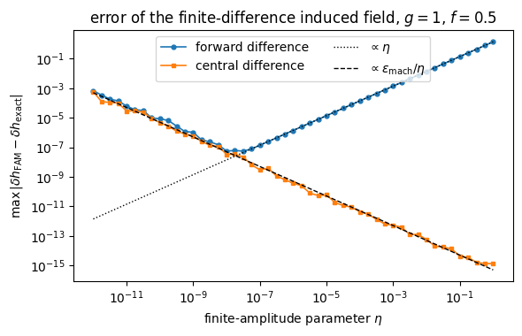
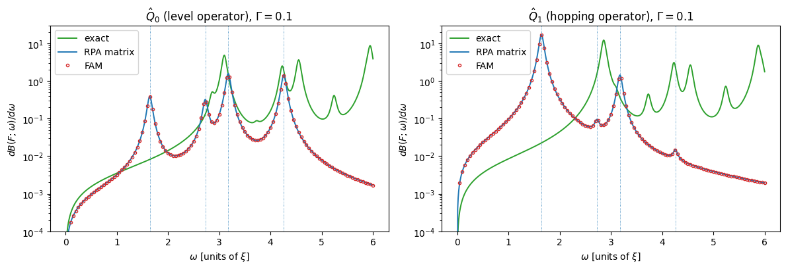
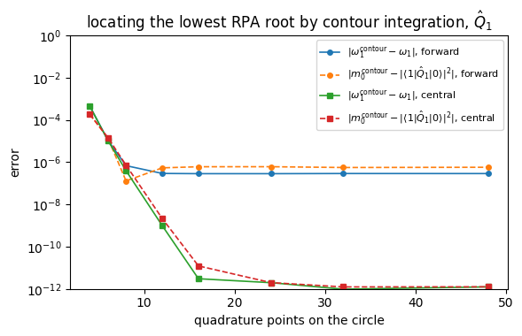
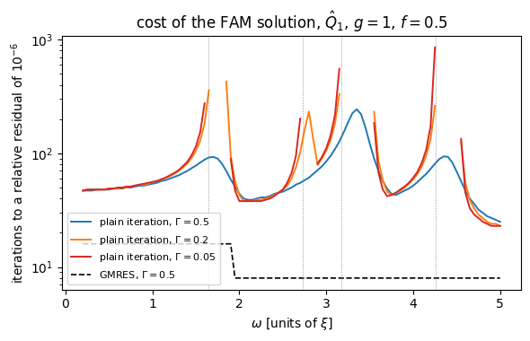

Project: the finite amplitude method for the RPA#
Companion notebook to Appendix A, Project 1, of Quantum mechanics for
many-particle systems. The code is the same as in
BookManybody/BookPrograms/appendixA/fam.py, which builds on the
chapter-7 program rpa.py.
The random-phase approximation of Chapter 7 was solved by constructing the matrices \(A\) and \(B\) and diagonalising \(\begin{pmatrix}A & B\\ -B^* & -A^*\end{pmatrix}\). The finite amplitude method of Nakatsukasa, Inakura and Yabana, Phys. Rev. C 76, 024318 (2007), solves the same linear-response problem without ever forming \(A\) and \(B\): it needs only the mean-field routine \(h[\rho]\) of a static Hartree-Fock code, evaluated for a density built from independent bra and ket orbitals.
For a fixed, in general complex, frequency \(\omega\) and an external one-body field \(\hat F\), the forward and backward amplitudes \(X_{mi}(\omega)\) and \(Y_{mi}(\omega)\) satisfy
where the induced field is evaluated as the finite difference
with \(\rho=\sum_i|\psi_i\rangle\langle\psi'_i|\) non-Hermitian. The strength function follows from the amplitudes,
The paper applies this to the deformed nucleus \(^{20}\)Ne with the BKN functional on a three-dimensional mesh. That calculation needs a coordinate-space Hartree-Fock code the book does not have; every methodological result of the paper, however, can be reproduced on the pairing plus particle-hole model of Chapter 7 – and, because the model can be diagonalised exactly, compared with the exact response as well.
Contents:
The mean field and the particle-hole space
The induced field by finite differences: the \(\eta\) trade-off
Strength functions: exact, matrix RPA and FAM
Sum rules and poles by contour integration
The cost: iterations against frequency and smoothing
import sys, os, glob
import numpy as np
import matplotlib.pyplot as plt
# the chapter programs live in BookPrograms/chapterNN and the project
# programs in BookPrograms/appendixA; put them all on the path
for _pattern in ("chapter*", "appendix*"):
for _d in sorted(glob.glob(os.path.join("..", "BookManybody",
"BookPrograms", _pattern))):
if _d not in sys.path:
sys.path.insert(0, _d)
import rpa
import fam
np.set_printoptions(precision=6, suppress=True, linewidth=120)
1. The mean field and the particle-hole space#
The class MeanField plays the role of the static Hartree-Fock program: it
knows how to build \(h[\rho]=t+\sum_{cd}\bar v_{acbd}\rho_{dc}\) from a one-body
density and nothing about the RPA. The single extension the finite amplitude
method asks for is h_braket(bra, ket), which accepts independent bra and ket
orbitals. We work at \(g=1\), \(f=0.5\), the most strongly coupled case of
Chapter 7, where the residual interaction shifts the lowest particle-hole
energy by about ten per cent.
fam.demo_setup()
==========================================================================
1. The mean field and the particle-hole space
==========================================================================
L = 4 levels, N = 4 particles, g = 1.0, f = 0.5
E_HF = -0.269764
HF single-particle energies: -1.5052 -1.5052 0.1194 0.1194 1.9305 1.9305 2.9534 2.9534
particle-hole pairs: 16, unperturbed energies [1.8111 2.834 3.4357 4.4586]
h[rho] returns the HF energies when fed the HF density:
max |h0 - diag(eps)| = 9.5e-14
and it is linear in rho, so the finite difference is exact up to
the quadratic term of rho = sum |psi><psi'| and to round-off.
2. The induced field by finite differences#
Because \(h[\rho]\) is linear in \(\rho\) for this model, \(\delta h\) could be
evaluated exactly as \((\partial h/\partial\rho)\,\delta\rho\) – the
conventional route, which the class MatrixResponse follows with the \(A\) and
\(B\) of Chapter 7. The finite difference of the paper is nevertheless not
exact: the density built from the perturbed bra and ket orbitals,
carries a quadratic term, so the forward difference has an \(O(\eta)\) error, and the round-off in \(h[\rho_\eta]-h_0\) grows as \(1/\eta\). A central difference removes the quadratic term. The demonstration below checks all of this against the explicit \(A\) and \(B\) and then solves the FAM equations at two frequencies with three different solvers.
fam.demo_validation()
==========================================================================
2. FAM against the RPA matrix, one frequency at a time
==========================================================================
The induced field from finite differences against (dh/drho) drho,
for a random amplitude vector:
max |dh(linear) - (A - Delta)X - BY| = 1.0e-13
forward eta = 1e-02: max |dh - dh(linear)| = 1.4e-02
forward eta = 1e-04: max |dh - dh(linear)| = 1.4e-04
forward eta = 1e-06: max |dh - dh(linear)| = 1.4e-06
forward eta = 1e-08: max |dh - dh(linear)| = 9.5e-08
central eta = 1e-02: max |dh - dh(linear)| = 3.5e-14
central eta = 1e-04: max |dh - dh(linear)| = 4.3e-12
central eta = 1e-06: max |dh - dh(linear)| = 5.3e-10
central eta = 1e-08: max |dh - dh(linear)| = 5.9e-08
The forward difference carries the O(eta) error of the term
eta^2 sum_i |X_i><Y_i| in the density; the central difference
cancels it, and both eventually lose to round-off, which grows as
1/eta. This is the finite-difference trade-off of the paper.
Strength function at omega = (1.7+0.05j):
RPA matrix, linear solve S = 0.1874033580-0.5563584970j
RPA matrix, spectral sum S = 0.1874033580-0.5563584970j
---------------------------------------------------------------------------
TypeError Traceback (most recent call last)
Cell In[3], line 1
----> 1 fam.demo_validation()
File ~/Teaching/ManyBodyPhysics/doc/LectureNotes/../BookManybody/BookPrograms/appendixA/fam.py:608, in demo_validation()
605 for scheme, method in (("forward", "gmres"), ("forward", "bicgstab"),
606 ("forward", "fixed"), ("central", "gmres")):
607 fam = FiniteAmplitudeMethod(mf, scheme=scheme)
--> 608 X, Y, it, res = fam.solve(F, omega, method=method, tol=1e-6)
609 S = fam.space.strength(F, X, Y)
610 if np.isfinite(res):
File ~/Teaching/ManyBodyPhysics/doc/LectureNotes/../BookManybody/BookPrograms/appendixA/fam.py:393, in FiniteAmplitudeMethod.solve(self, F_hf, omega, method, tol, maxiter, mixing, x0)
391 if method == "gmres":
392 restart = min(2 * n, 50)
--> 393 z, info = gmres(op, rhs, x0=x0, rtol=tol, atol=0.0,
394 restart=restart,
395 maxiter=max(1, maxiter // restart),
396 callback=callback, callback_type="pr_norm")
397 elif method == "bicgstab":
398 z, info = bicgstab(op, rhs, x0=x0, rtol=tol, atol=0.0,
399 maxiter=maxiter, callback=callback)
TypeError: gmres() got an unexpected keyword argument 'rtol'
fock, mf = fam.setup()
matrix = fam.MatrixResponse(mf)
rng = np.random.default_rng(1)
n = matrix.space.size
X = rng.normal(size=n) + 1j * rng.normal(size=n)
Y = rng.normal(size=n) + 1j * rng.normal(size=n)
dh_lin = fam.FiniteAmplitudeMethod(mf, scheme="linear").induced_field(X, Y)
etas = np.logspace(-12, 0, 49)
fig, ax = plt.subplots(figsize=(6.0, 3.9))
for scheme, marker in (("forward", "o"), ("central", "s")):
err = [np.abs(fam.FiniteAmplitudeMethod(mf, eta=eta, scheme=scheme)
.induced_field(X, Y) - dh_lin).max() for eta in etas]
ax.loglog(etas, err, marker=marker, ms=3.5, lw=1.2, label=scheme + " difference")
ax.loglog(etas, 1.4 * etas, "k:", lw=1, label=r"$\propto\eta$")
ax.loglog(etas, 5e-16 / etas, "k--", lw=1, label=r"$\propto\epsilon_{\rm mach}/\eta$")
ax.set_xlabel(r"finite-amplitude parameter $\eta$")
ax.set_ylabel(r"$\max\,|\delta h_{\rm FAM}-\delta h_{\rm exact}|$")
ax.set_title(r"error of the finite-difference induced field, $g=1$, $f=0.5$")
ax.legend(loc="upper center", ncol=2)
fig.tight_layout(); plt.show()

The forward difference is what the paper uses, with \(\eta=10^{-5}\): the error is then of order \(10^{-5}\), which is the origin of the “three to four digits” of agreement between FAM and RPA reported there. The central difference is exact down to round-off for a Hamiltonian linear in the density; for a density-dependent functional such as BKN or Skyrme it would still leave an \(O(\eta^2)\) error, at the price of two evaluations of \(h\) per iteration.
3. Strength functions: exact, matrix RPA and FAM#
Two external fields are natural in the model: the level operator \(\hat Q_0=\sum_{p\sigma}(p-1)\,\hat n_{p\sigma}=\hat H_0/\xi\), the discrete analogue of a monopole field, and the hopping operator \(\hat Q_1=\sum_{p\sigma}(\hat a^\dagger_{p+1\sigma}\hat a_{p\sigma}+{\rm h.c.})\), the analogue of a dipole field, which breaks pairs. For each we compute \(dB/d\omega\) with a smoothing \(\Gamma=0.1\) from the exact eigenstates of the \(N=4\) system, from the RPA matrix, and from the finite amplitude method.
fam.demo_strength()
==========================================================================
3. Strength functions: exact, RPA matrix and FAM
==========================================================================
smoothing Gamma = 0.1, i.e. omega -> omega + i Gamma/2
level operator Q_0
omega exact RPA FAM |FAM-RPA| iter
0.50 0.001546 0.000966 0.000966 1.1e-08 16
1.00 0.003517 0.003208 0.003208 3.4e-08 16
1.50 0.006756 0.043601 0.043601 5.8e-07 16
1.70 0.008868 0.177094 0.177094 4.5e-07 16
2.00 0.014082 0.012197 0.012197 1.8e-08 16
2.50 0.044676 0.024760 0.024760 1.6e-07 16
3.00 1.036885 0.131015 0.131013 1.5e-06 16
3.50 0.099828 0.044469 0.044469 1.5e-07 16
RPA roots : [1.6445 2.7279 3.176 4.2588]
exact excitations with strength > 1e-3: [ 2.8596 3.0986 3.7301 4.2292 4.5498 5.2405 5.8731 5.944 6.552 8.0838 8.1885 8.2764 8.5887 9.1274
9.2594 10.1426 10.7073]
hopping operator Q_1
omega exact RPA FAM |FAM-RPA| iter
0.50 0.003580 0.023513 0.023513 9.3e-08 16
1.00 0.008501 0.096700 0.096700 4.0e-07 16
1.50 0.017851 1.824193 1.824177 1.6e-05 16
1.70 0.024820 7.650046 7.650008 3.8e-05 16
2.00 0.044855 0.330853 0.330853 4.2e-07 8
2.50 0.240834 0.065427 0.065427 5.8e-09 8
3.00 1.433951 0.129912 0.129911 9.1e-07 16
3.50 0.118611 0.044335 0.044335 1.8e-09 8
RPA roots : [1.6445 2.7279 3.176 4.2588]
exact excitations with strength > 1e-3: [ 2.8596 3.0986 3.7301 4.2292 4.5498 5.2405 5.8731 5.944 6.552 7.6917 8.0838 8.1885 8.2764 8.5887
9.1274 9.2594 10.1426 10.7073]
fock, mf = fam.setup()
matrix = fam.MatrixResponse(mf)
exact = fam.ExactResponse(fock, mf.N, mf.g, mf.f)
fam_fwd = fam.FiniteAmplitudeMethod(mf)
gamma = 0.1
omegas = np.linspace(0.0, 6.0, 601)
omegas_fam = np.linspace(0.05, 6.0, 120)
fig, ax = plt.subplots(1, 2, figsize=(12, 4.2))
for panel, (name, F0) in enumerate((("$\\hat Q_0$ (level operator)", fam.field_level(fock.L)),
("$\\hat Q_1$ (hopping operator)", fam.field_hopping(fock.L)))):
F = mf.to_hf_basis(F0)
ax[panel].plot(omegas, fam.strength_curve(exact.strength, F0, omegas, gamma),
color="C2", lw=1.4, label="exact")
ax[panel].plot(omegas, fam.strength_curve(matrix.strength, F, omegas, gamma),
color="C0", lw=1.4, label="RPA matrix")
ax[panel].plot(omegas_fam, fam.strength_curve(fam_fwd.strength, F, omegas_fam, gamma),
"o", color="C3", ms=3, mfc="none", label="FAM")
for w in np.unique(np.round(matrix.omega, 6)):
ax[panel].axvline(w, color="C0", lw=0.6, ls=":")
ax[panel].set_xlabel(r"$\omega$ [units of $\xi$]")
ax[panel].set_ylabel(r"$dB(F;\omega)/d\omega$")
ax[panel].set_title(rf"{name}, $\Gamma={gamma}$")
ax[panel].set_yscale("log"); ax[panel].set_ylim(1e-4, 30)
ax[panel].legend(loc="upper left")
fig.tight_layout(); plt.show()

The FAM points sit on the matrix-RPA curve to the accuracy of the finite difference, at every frequency and for both operators: this is the content of Fig. 1 of the paper, reproduced on a system where nothing is hidden. The dotted vertical lines mark the four distinct RPA roots (each is four-fold degenerate in this model).
The exact response is another matter. At \(g=1\), \(f=0.5\) the exact ground state is strongly correlated – Chapter 7 found the RPA correlation energy far from the exact one here – and its strength sits at higher energies and is spread over many states that RPA, with its single particle-hole pair, cannot reach. The finite amplitude method reproduces the RPA, no more and no less; whether the RPA is adequate is a separate question, and the model answers it honestly.
4. Sum rules and poles by contour integration#
The energy-weighted sum rule \(m_1=\sum_\nu\omega_\nu|\langle\nu|\hat F|0\rangle|^2
=\tfrac12\langle 0|[\hat F,[\hat H,\hat F]]|0\rangle\) holds for the exact
states, and – Thouless’ theorem – for the self-consistent RPA with the
Hartree-Fock state on the right-hand side. Both double commutators are
evaluated with the build_AB routine of Chapter 7.
The strength function is a meromorphic function of \(\omega\) with simple poles at the RPA roots, so its contour integrals return the moments of the enclosed poles,
and the ratio locates a single enclosed pole. Each quadrature point is one FAM solution at a complex frequency, with no smoothing at all.
The same idea gives the RPA correlation energy of Chapter 7, \(E^{\rm RPA}_{\rm corr}=\tfrac12(\sum_\nu\omega_\nu-{\rm Tr}\,A)\), without the matrix \(A\): for the unit field \(\hat F_K=\hat a^\dagger_m\hat a_i\) the strength function has the residue \(|X^\nu_K|^2\) at \(+\omega_\nu\) and \(-|Y^\nu_K|^2\) at \(-\omega_\nu\), so that, with a circle \(C_+\) around the positive roots and its mirror image \(C_-\),
by the normalisation \(\sum_K(|X^\nu_K|^2-|Y^\nu_K|^2)=1\), while \(A_{KK}=\Delta_K+\delta h_K[X=e_K,Y=0]\) is one induced field per pair.
fam.demo_sum_rules()
==========================================================================
4. Sum rules and the poles by contour integration
==========================================================================
field Q_0
RPA m0 = 0.58342157 m1 = 1.98184275 (1/2)<HF|[F,[H,F]]|HF> = 1.98184275
exact m0 = 3.58821259 m1 = 18.35650026 (1/2)<0|[F,[H,F]]|0> = 18.35650026
contour around omega_1 with 8 points: m0 = 0.06117085, m1/m0 = 1.64452806 (omega_1 = 1.64448414)
contour around omega_1 with 16 points: m0 = 0.06116866, m1/m0 = 1.64448506 (omega_1 = 1.64448414)
contour around omega_1 with 32 points: m0 = 0.06116866, m1/m0 = 1.64448506 (omega_1 = 1.64448414)
the same with the central difference: m0 = 0.06116884, m1/m0 = 1.64448414
contour enclosing every positive root: m0 = 0.58342072 m1 = 1.98184263
field Q_1
RPA m0 = 2.91761894 m1 = 5.15401024 (1/2)<HF|[F,[H,F]]|HF> = 5.15401024
exact m0 = 5.66687100 m1 = 27.80182051 (1/2)<0|[F,[H,F]]|0> = 27.80182051
contour around omega_1 with 8 points: m0 = 2.68386483, m1/m0 = 1.64448482 (omega_1 = 1.64448414)
contour around omega_1 with 16 points: m0 = 2.68386410, m1/m0 = 1.64448442 (omega_1 = 1.64448414)
contour around omega_1 with 32 points: m0 = 2.68386415, m1/m0 = 1.64448443 (omega_1 = 1.64448414)
the same with the central difference: m0 = 2.68386470, m1/m0 = 1.64448414
contour enclosing every positive root: m0 = 2.91761644 m1 = 5.15401130
The RPA correlation energy from contour integrals of the FAM
strength functions of the sixteen unit fields a^+_m a_i:
forward sum omega = 47.22841931 Tr A = 50.15811508 E_corr = -1.46484789
central sum omega = 47.22841931 Tr A = 50.15811508 E_corr = -1.46484789
chapter 7 sum omega = 47.22841931 Tr A = 50.15811508 E_corr = -1.46484788
Thouless' theorem holds for the self-consistent RPA: the energy-
weighted sum of the RPA strengths equals the double commutator in
the Hartree-Fock state. The contour integrals of the FAM strength
function return both moments without any smoothing, and the ratio
of the two locates the pole -- to the accuracy of the finite
difference, and to ten digits with the central one -- from a
solver that has never seen the matrices A and B.
fock, mf = fam.setup()
matrix = fam.MatrixResponse(mf)
F = mf.to_hf_basis(fam.field_hopping(fock.L))
w1 = matrix.omega[0]
t_all = np.abs(matrix.transition_amplitudes(F))**2
t1 = np.sum(t_all[np.abs(matrix.omega - w1) < 1e-6])
npts = np.array([4, 6, 8, 12, 16, 24, 32, 48])
fig, ax = plt.subplots(figsize=(6.0, 3.9))
for scheme, marker in (("forward", "o"), ("central", "s")):
solver = fam.FiniteAmplitudeMethod(mf, scheme=scheme)
err_w, err_m = [], []
for npt in npts:
m0, m1 = fam.contour_moments(lambda z: solver.strength(F, z),
center=w1, radius=0.3, npoints=npt)
err_w.append(abs((m1 / m0).real - w1))
err_m.append(abs(m0.real - t1))
ax.semilogy(npts, err_w, marker=marker, ms=4, lw=1.2,
label=rf"$|\omega_1^{{\rm contour}}-\omega_1|$, {scheme}")
ax.semilogy(npts, err_m, marker=marker, ms=4, lw=1.2, ls="--",
label=rf"$|m_0^{{\rm contour}}-|\langle 1|\hat Q_1|0\rangle|^2|$, {scheme}")
ax.set_xlabel("quadrature points on the circle")
ax.set_ylabel("error")
ax.set_ylim(1e-12, 1)
ax.set_title(r"locating the lowest RPA root by contour integration, $\hat Q_1$")
ax.legend(loc="upper right", fontsize=8)
fig.tight_layout(); plt.show()

The trapezoidal rule on a circle converges exponentially, and the floor it reaches is set by the finite difference: about \(10^{-6}\) for the forward scheme with \(\eta=10^{-5}\), round-off for the central one. This is how the finite amplitude method is used in practice to extract discrete RPA modes and their transition strengths without a diagonalisation (Hinohara, Kortelainen and Nazarewicz, Phys. Rev. C 87, 064309 (2013)).
5. The cost: iterations against frequency and smoothing#
The FAM equations are linear in \((X,Y)\) and are solved iteratively. The paper uses a bi-conjugate-gradient solver and reports that the number of iterations grows with \(\omega\) and with decreasing \(\Gamma\). In the model the unknowns number \(2\times16\), so a Krylov solver converges in a handful of steps whatever \(\omega\) is; the plain iteration \(X\leftarrow(F+\delta h)/(\omega-\Delta)\) with mixing, on the other hand, shows the trend of the paper clearly – it slows down as the frequency approaches a pole and as \(\Gamma\) shrinks, and it can fail altogether.
fam.demo_iterations()
==========================================================================
5. The cost: iterations against frequency and smoothing
==========================================================================
omega gmres G=0.5 fixed G=0.5 gmres G=0.2 fixed G=0.2 gmres G=0.05 fixed G=0.05
0.50 16 48 16 49 16 49
1.00 16 54 16 56 16 56
1.50 16 78 16 105 16 115
1.65 16 92
16 360
16 3000*
2.00 8 44 8 43 8 38
2.70 8 55 8 102 8 202
3.20 8 153
16 3000* 16 643*
4.00 8 52 8 59 8 61
6.00 8 21 8 21 8 21
(* : not converged in 3000 iterations, or diverged)
The Krylov solver needs at most as many iterations as there are
unknowns, 2 x 16 here, and is insensitive to Gamma. The plain
iteration is driven by the size of the residual interaction
relative to |omega - Delta|, so it slows down or fails near a pole
and for small Gamma. The paper reports the same trend for the
coordinate-space case, where the unknowns number in the millions
and a Krylov solver is the only option.
fock, mf = fam.setup()
solver = fam.FiniteAmplitudeMethod(mf)
matrix = fam.MatrixResponse(mf)
F = mf.to_hf_basis(fam.field_hopping(fock.L))
omegas = np.linspace(0.2, 5.0, 97)
fig, ax = plt.subplots(figsize=(6.0, 3.9))
for gamma, color in ((0.5, "C0"), (0.2, "C1"), (0.05, "C3")):
its = []
for w in omegas:
_, _, it, res = solver.solve(F, w + 0.5j * gamma, method="fixed",
tol=1e-6, mixing=0.5, maxiter=2000)
its.append(it if res < 1e-6 else np.nan)
ax.semilogy(omegas, its, color=color, lw=1.4, label=rf"plain iteration, $\Gamma={gamma}$")
its = [solver.solve(F, w + 0.25j, method="gmres", tol=1e-6)[2] for w in omegas]
ax.semilogy(omegas, its, color="k", lw=1.2, ls="--", label=r"GMRES, $\Gamma=0.5$")
for w in np.unique(np.round(matrix.omega, 6)):
ax.axvline(w, color="gray", lw=0.6, ls=":")
ax.set_xlabel(r"$\omega$ [units of $\xi$]")
ax.set_ylabel("iterations to a relative residual of $10^{-6}$")
ax.set_title(r"cost of the FAM solution, $\hat Q_1$, $g=1$, $f=0.5$")
ax.legend(loc="lower left", fontsize=8)
fig.tight_layout(); plt.show()

Gaps in the plain-iteration curves are frequencies at which the iteration diverges. The dotted lines are the RPA roots. Whether the plain iteration converges at all is decided by the spectral radius of the iteration map, which is set by the residual interaction divided by \(|\omega-\Delta_{mi}|\); a Krylov solver has no such restriction, which is why the paper – with millions of unknowns – uses one.
What to do next#
The tasks of Project 1 in Appendix A start from here: vary \(\eta\) and the difference scheme, change the external field, follow the lowest pole as a function of \(f\) by contour integration alone, and then move on to the two open-ended parts – the Nambu-Goldstone mode of the number operator in the QRPA of Chapter 7, and a coordinate-space Hartree-Fock code that would allow the \(^{20}\)Ne calculation of the paper itself.